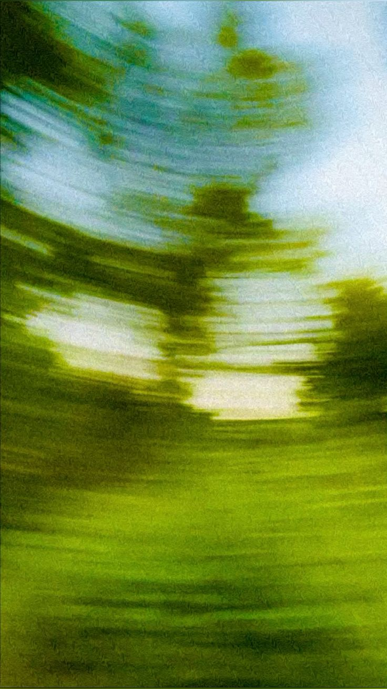
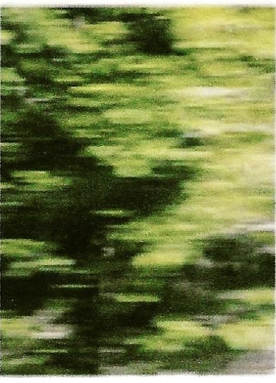
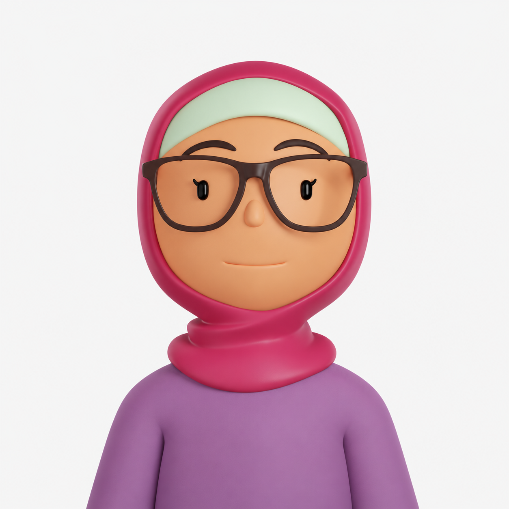
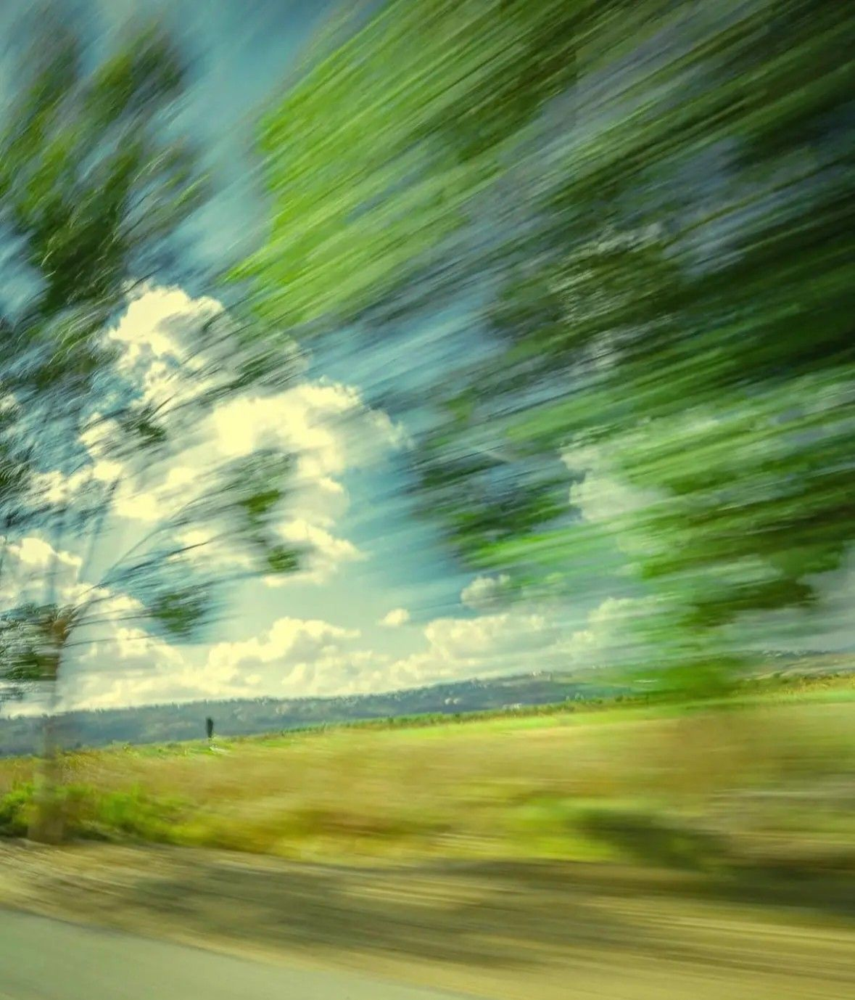
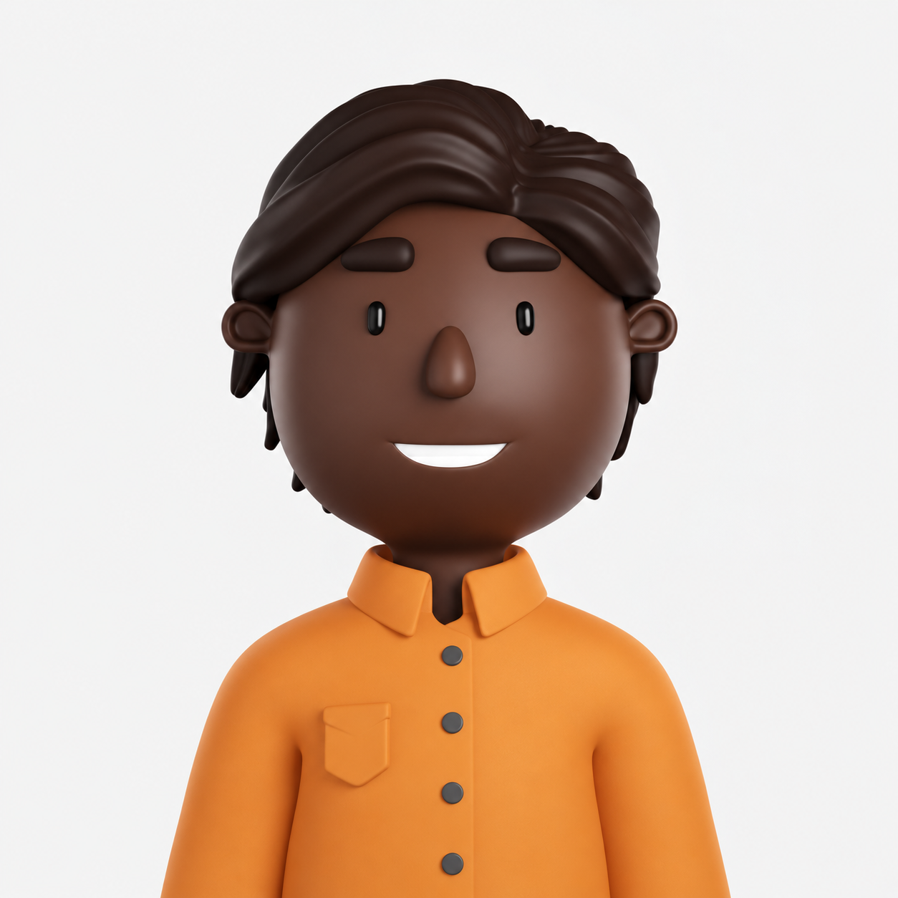

A quieter kind of morning
Riverside Park, NYC
There is something about looking up that makes a busy day feel a little quieter.
Riverside Park, NYC
There is something about looking up that makes a busy day feel a little quieter.

Outdoors
A little blur from the afternoon walk.


Outdoors
Finding a different perspective in familiar places.


Outdoors
A glimpse of the countryside passing by.